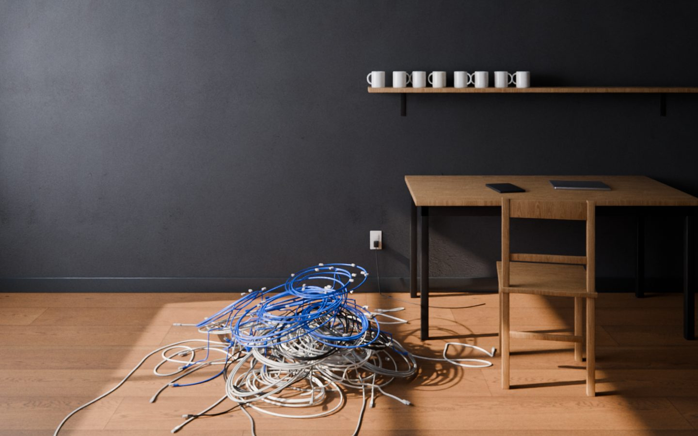
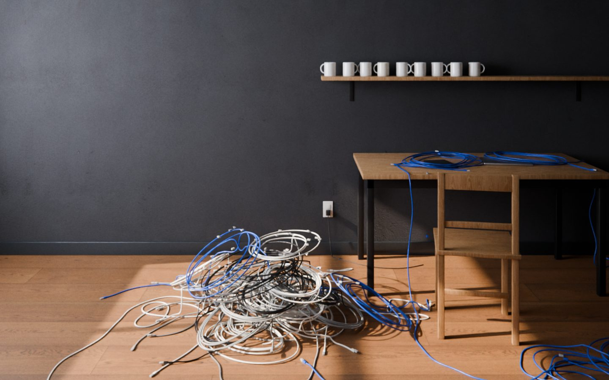
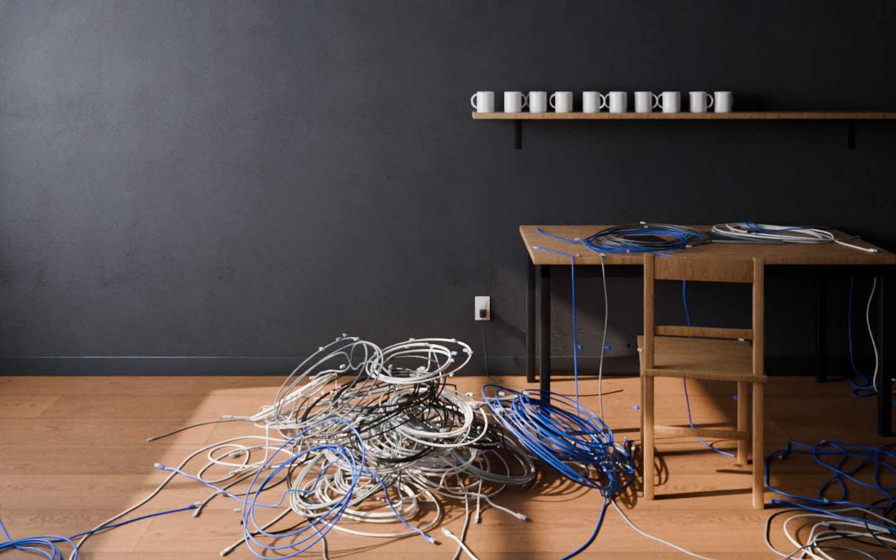
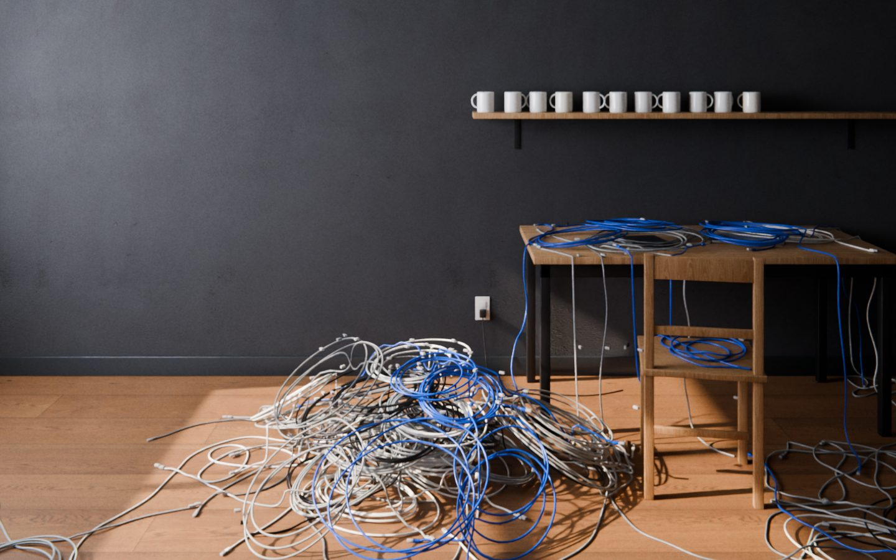
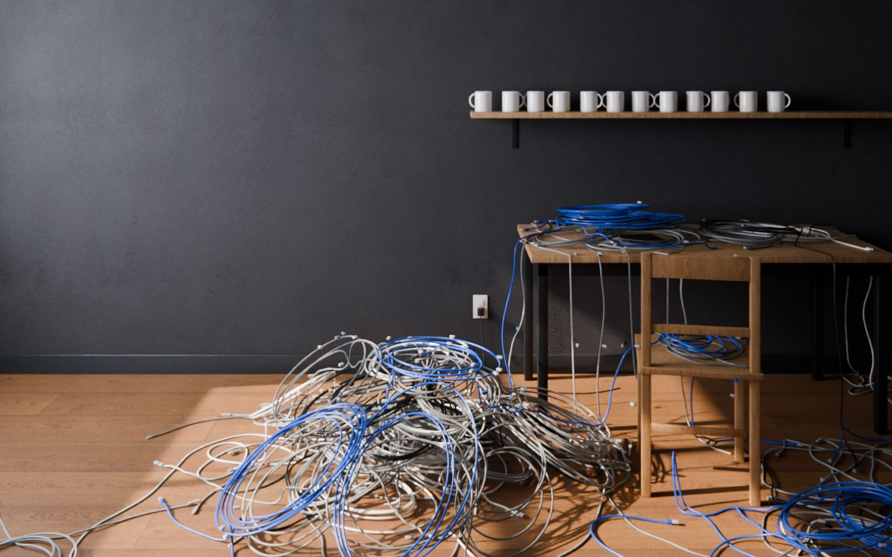
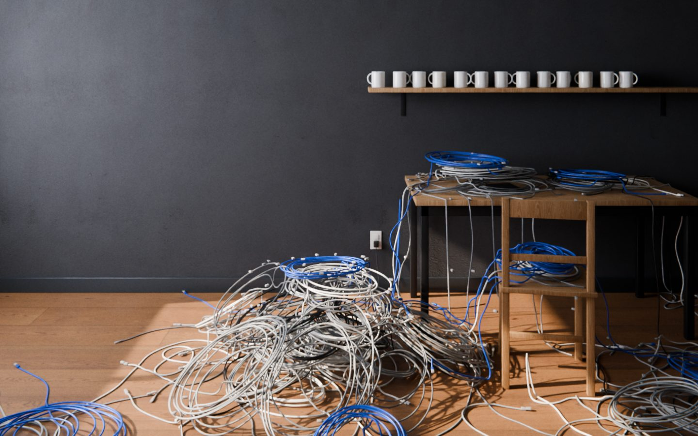
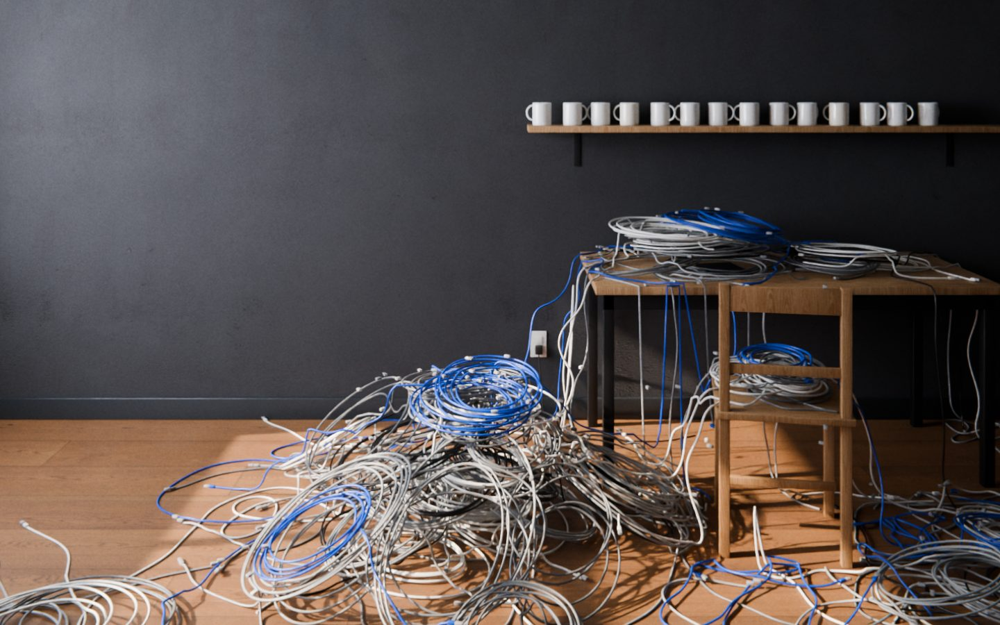
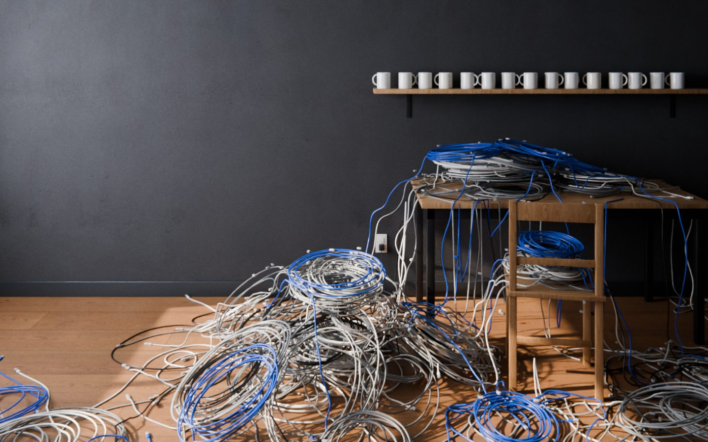
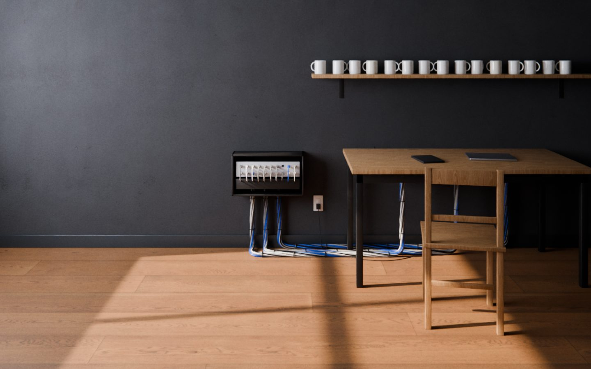

Every hire compounds complexity before it compounds capacity.
For bootstrapped, self‑funded founders with teams of 1–12
Scroll to hire. Each step is one more person.
8peopleone mug each28cablesone for each pair of people

Each addition doesn't add one unit of complexity — it adds n-1 new interaction pathways.
9peopleone mug each36cables (+8)one for each pair of people

Team 8–12
Leader + team. Still know everyone's name.
10peopleone mug each45cables (+9)one for each pair of people

11peopleone mug each55cables (+10)one for each pair of people

12 isn't where you're trying to get. It's the line you don't cross.
12peopleone mug each66cables (+11)one for each pair of people

Threshold 13–14
At 13-14 employees, next hire is a phase change, not incremental growth.
Past twelve, something breaks.
13peopleone mug each78cables (+12)one for each pair of people

Complexity that accumulated faster than the structure could hold.
14peopleone mug each91cables (+13)one for each pair of people

Graveyard 15–39
Complexity > Capacity = Redline.
The business is drowning. Every addition makes it worse.
15peopleone mug each105cables (+14)one for each pair of people
You were never the problem. The model you inherited was.

Real scaling is cyclical.
Up Up for growth.
Side Side for stability.
Down Down for pruning.
Systems were what actually held the weight.
Capacity > Complexity = Oxygen.
The business can breathe. Systems carry what the business creates.
The pages are reference. The file is the operating system.
SUSD Bootloader
A free file for your AI. It finds where your team stands and which advice fits.
Version 16
35,445 words for your AI to read, so you don't have to
Works with Claude, ChatGPT and Gemini
The Bootloader asks How many people are on your team?
This single question reveals location on the destination map, physics that apply, and what advice will fit vs. make things worse.
Scaling Up‑Side‑Down The book by Michael Wentz. Pre-orders open soon.